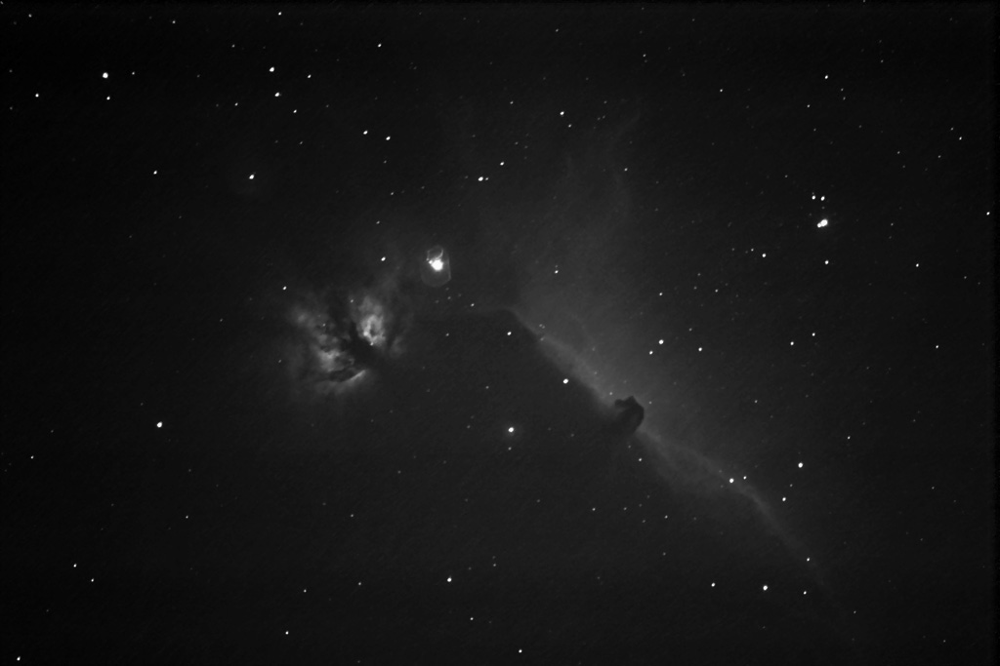

The Flame and Horsehead Nebulae This is an image of the Flame nebula and the Horsehead nebula taken in Salt Lake City at the U of U observatory.  Return Paul's Pictures
This is an image of the Flame nebula and the Horsehead nebula taken in Salt Lake City at the U of U observatory.
Return Paul's Pictures